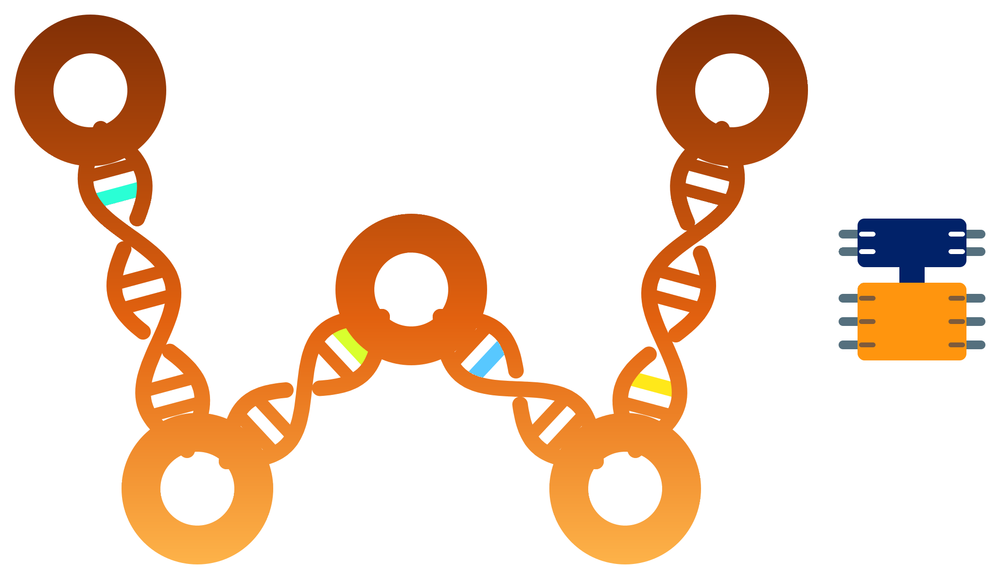

4diac integration
Mutation workflows over supported 4diac-related EMF models, with adaptation and post-processing components for IEC 61499 applications.

Wodel4diacOctober 2026 integration update Target: Eclipse 4diac IDE 3.3.0
Wodel for industrial automation
Wodel4diac extends Wodel, a model mutation domain-specific language (DSL), to model-based engineering workflows in Eclipse 4diac. Researchers can describe changes to models and produce variants of IEC 61499 function-block applications for mutation-based experimentation, testing research, and fault-injection studies.
It is an Eclipse/EMF research prototype. Generated variants must be inspected and validated for the intended 4diac application; mutation alone does not guarantee IEC 61499 conformance, behavioral correctness, runtime safety, or deployability.
Latest integration snapshot
This release updates the Wodel4diac integration target from Eclipse 4diac 3.2.0 to 3.3.0 and refreshes the accompanying Wodel source and documentation. It brings the 4diac integration into the current Wodel research ecosystem, while retaining the distinction between stable Wodel core capabilities and experimental components.
Mutation workflows over supported 4diac-related EMF models, with adaptation and post-processing components for IEC 61499 applications.
The Wodel DSL, mutation engine, registries, metrics, validation, comparison, and extension points included in the repository.
The wodel.ai.assistant bundle contains LLM-backed assistance and tasks for Wodel-oriented workflows. Review generated content before use.
The supplied source snapshot includes these components, but it does not establish which individual implementation changes were introduced after July 2026. Eclipse 4diac 3.3.0 is the target platform, not the OSGi version of every Wodel feature.
For new capabilities in the underlying IDE and FORTE runtime, see the official Eclipse 4diac 3.3 release announcement. Those upstream 4diac features are not being claimed as Wodel4diac implementations.
Select an IEC 61499-related model and the compatible metamodel, using the supported Eclipse workspace integration.
Write a Wodel .mutator program describing metamodel-specific changes and generation settings.
Execute the Wodel mutation engine and retain mutation traces, registry information, and model results.
Use the 4diac post-processor where applicable, then inspect and validate the resulting resources in 4diac.
The implementation includes conversion paths for operational-semantics .opsem resources. Some current workspace-oriented utilities reference a project named MutationTestingApp and its network_traces and mutants directories; adapt those assumptions before using a different project layout.
| Component | Requirement / note |
|---|---|
| Target IDE | Eclipse 4diac IDE 3.3.0 with the relevant 4diac features installed. |
| Java | JDK 21 for the supplied Wodel4diac project configuration. |
| Modeling stack | Eclipse Plug-in Development Environment (PDE), EMF, Xtext, and required plug-in dependencies. |
| Optional tools | Some semantic checking/model-finding workflows use additional tools, such as eFinder and a constraint backend. |
Compatibility is described for the supplied integration source. The 4diac 3.3.0 target does not imply that every optional bundle, solver, or AI task has been exhaustively tested on every operating system.
https://gomezabajo.github.io/Wodel4diac/update-site/Publication requirement: the update-site URL works as an Eclipse installer only when the published folder contains exported p2 repository metadata and the relevant feature/plug-in JARs. The GitHub Pages source archive alone does not include those artifacts. Check the published repository before advertising the new version as downloadable.
git clone https://github.com/gomezabajo/Wodel4diac.git
cd Wodel4diacPreviously advertised standalone Windows and Ubuntu archives have not been verified for the 3.3.0 target and are therefore not linked as current installers. Use the official 4diac distribution with a verified Wodel4diac update site or build from source.
Create a Wodel project with a .mutator file, select a model/metamodel pair, and configure mutation blocks. The example below is adapted from the repository's finite-automata examples; it demonstrates Wodel syntax and is not a ready-to-run IEC 61499 program.
generate 10 mutants
in "data/out/"
from "data/model/"
metamodel "/[@**@]/data/model/DFAAutomaton.ecore"
with blocks {
dtr "Delete transition" {
remove one Transition
}
mfs "Set final state to non-final" {
modify one State where {isFinal = true} with {reverse(isFinal)}
}
rts "Set transition target to a new final state" {
s = create State with {name = 'f', isFinal = true}
modify target tar from one Transition to s
}
}For 4diac, replace the automata metamodel and its classes/features with the types accepted by the selected IEC 61499 model adapter. Generate and inspect mutants first; do not deploy altered control applications without appropriate validation.
See the Wodel examples and the repository README for further details.
| Module | Purpose |
|---|---|
wodel.fordiac | Feature defining the 4diac-specific extension. |
wodel.postprocessor.fordiac | 4diac post-processing and operational-semantics conversion. |
wodel.run | Wodel execution integration and model-conversion helpers. |
wodel.core, wodel.dsls.wodel* | Mutation language, editor, and core functionality. |
wodel.registry*, wodel.footprints | Mutation metadata and footprint information. |
wodel.semantic.*, wodel.syntactic.* | Model validation, comparison, and related extensions. |
wodel.ai.assistant | Experimental AI-assisted workflows. |
wodel.wodeledu, wodel.wodeltest | Related educational and mutation-testing tooling. |
wodel.updatesite | PDE repository definition; installable p2 artifacts require export/publication. |
Wodel4diac is an IEC 61499 integration within a wider family of model-based engineering tools:
The wodel.ai.assistant plug-in contains task infrastructure, chat-related functionality, and an LLM client for Wodel-oriented assistance. Its source includes support for user-supplied API credentials; do not commit keys to repositories, and review all proposed model or mutator changes before running them.
Availability of the source bundle does not guarantee that every task is packaged by the update site or supported by a stable user interface in Eclipse 4diac 3.3.0.
apitooling.apigenerationVerify that Eclipse PDE API Tools and its Ant tasks are installed and available to the build. Restart Eclipse, clean the affected plug-in (for example wodel.semantic.comparison.dfa), regenerate its PDE build scripts if appropriate, and retry the export.
bin/The runtime class code-source location may be a compiled output directory. Resolve the actual project root from a validated configuration file or project descriptor, not the first ancestor containing a copied data directory.
Verify the exported features/, plugins/ and p2 metadata are deployed at the public URL. Refresh Eclipse's software-site information and inspect installed bundle versions.
Check the model/metamodel combination, the registered post-processor, the Eclipse workspace/project assumptions and any required .opsem conversion. Generated variants require validation and are not automatically executable FORTE applications.
If you use Wodel4diac in academic work, cite the underlying Wodel language publication and any relevant 4diac-specific publication:
@inproceedings{GomezAbajo2016Wodel,
author = {G\'omez-Abajo, Pablo and Guerra, Esther and de Lara, Juan},
title = {Wodel: A Domain-Specific Language for Model Mutation},
booktitle = {Proceedings of the 31st Annual ACM Symposium on Applied Computing (SAC)},
pages = {1968--1973},
year = {2016},
doi = {10.1145/2851613.2851751}
}A finalized, citable Wodel4diac-specific publication was not identified in the supplied repository documentation.
Wodel4diac builds on Wodel and the Eclipse 4diac ecosystem, as well as Eclipse EMF and Xtext. The source tree contains supporting projects associated with anATLyzer, eFinder, and tinytools.
Developed in the context of research at the Universidad Autónoma de Madrid and the Universidad de Murcia.
The repository contains the Eclipse Public License 2.0 (EPL-2.0). Refer to the LICENSE file. Redistribution of third-party bundles may involve separate license notices.